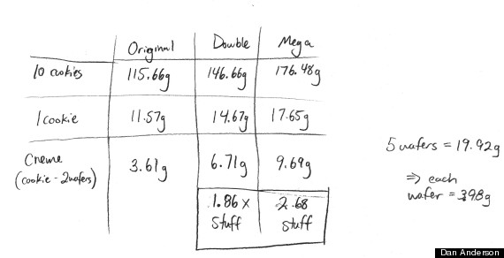

Double Stuf Oreos Don't Actually Have Double The Creme

Probably better that they're called "Double Stuf" and not "1.86 x Stuf", but this is a total rip-off. Personally, I prefer to eat the "Double" and drink milk with it, whereas I prefer to dunk the normal Oreos in milk. I probably care too much about Oreos. Proof: the other day someone commented how much they hated normal Oreos, and only liked the golden kind. Un-following somebody mid-in-person-conversation isn't possible.